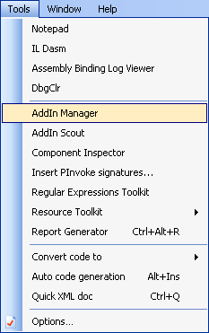
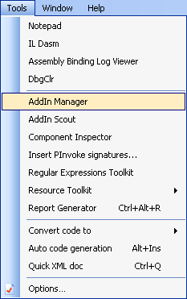

Support for IronRuby 0.9.1 is now available for SharpDevelop 3.1. The IronRuby addin is an early alpha preview release/proof of concept and is not an official part of SharpDevelop 3.1 so it is available as a separate download at the end of this post.
Please note that the forms designer and code conversion need a lot more work.
Open up the new project dialog by selecting New then Solution from the File menu. Selecting the Ruby category will show two project templates. One will create a Windows console application and the other will create a Windows Forms application.
To run your application ensure the Program.rb file is in the active text editor window then select Run from the Ruby menu. This will run your code with the IronRuby console (ir.exe). Alternatively you can run the application by selecting Run from the Debug menu but you will first need to configure the project options. Select Project Options from the Project menu to open up the Debug project options.
You will need to add ${ProjectDir} to the command line arguments and working directory as shown above. The -19 command line argument is used to enable Ruby 1.9 support otherwise the IronRuby console will not be able to load any UTF-8 source code files.
Currently you cannot debug your code even if the -D command line argument is specified.
If you are running a windows app and nothing seems to happen then open a command line window and run it from there. This way you should see any errors reported from the IronRuby console.
The Windows Forms designer is still in its early stages so please be warned that it may break the form's code or worse. The designer code generation is a lot more complete than the designer loader so the designer will most likely fail to load all controls into the designer.
The designer can be opened in the usual way by opening the form in the text editor and selecting the Design tab at the bottom of the text editor. Once open in the designer you can add controls to the form in the usual way from the Tools window. In the screenshot below a label, text box and a button have been added.
Click the Source tab to view the generated code in the InitializeComponents method. Make sure you do this before trying to save the code.
To open the IronRuby Console window select Tools, Ruby Console from the View menu.
When you type Ruby code into the IronRuby Console you will get code completion when you press the '.' character.
Code folding allows you to collapse regions of a class.
To convert VB.NET or C# to Ruby open the file you want to convert and then select Convert code to Ruby from the Tools menu.
The code conversion is limited to classes so it will not convert an arbitary piece of code that is not inside a class. A C# class being converted to Ruby is shown below.
The code conversion is still at an early stage of development so it will fail on complicated classes.
Classes in the open solution will be displayed in the Class browser (Select Classes from the View menu).
From there you can double click a class or method and the text editor will display the corresponding code.

Some of the Ruby tutorials and links used whilst creating the IronRuby addin.